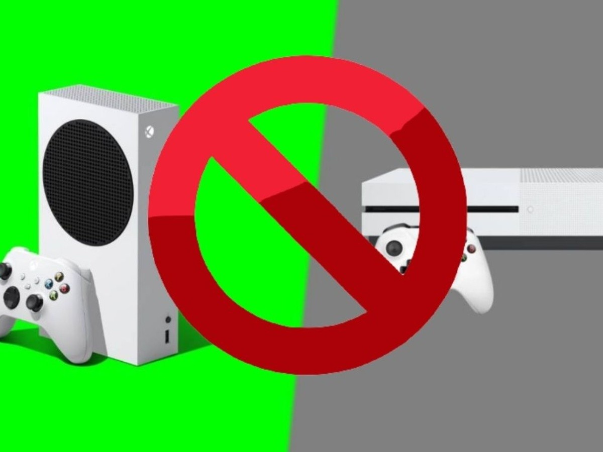
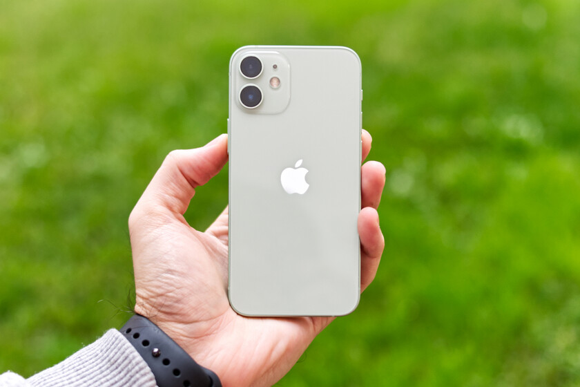
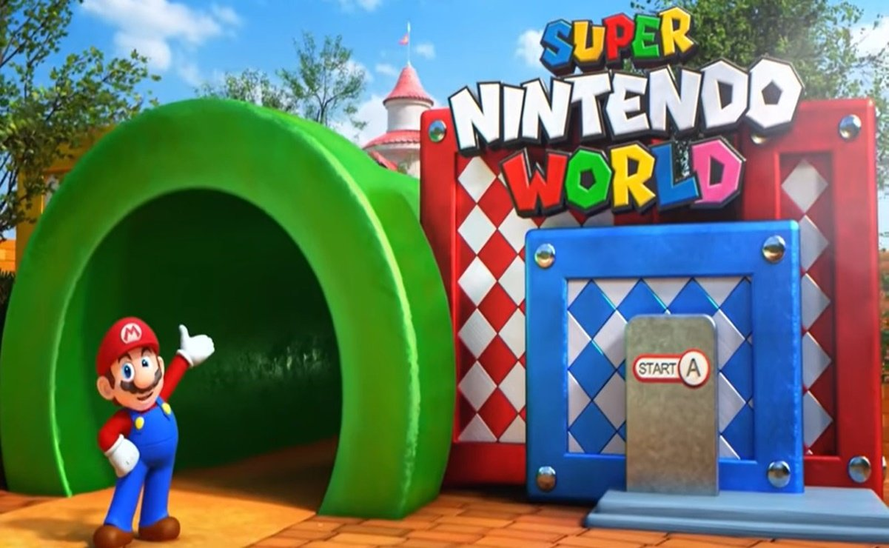

Ultimas noticias
Fecha: 26 nov
Categoria: Entretenimiento
De acuerdo con el vicepresidente y presidente de Xpeng, Brian Gu, su empresa se centra en las
oportunidades globales, queremos equilibrarnos con nuestra contribución de entrega, la mitad de
China, la mitad de fuera de China, a largo plazo” señaló el ejecutivo en entrevista con la CNBC
Fecha: 26 nov
Categoria: Musica
¿Por qué eliminaron la vista de coche en Spotify?
Como tal la empresa no ha dicho nada como razón para tomar esta polémica e interesante decisión, sin
embargo distintos usuarios y foros van encontrando el camino de esta elección.Este año, Spotify
lanzó un gadget para vehículos al mercado que tiene la misma experiencia y utilidad que la vista de
coche, por lo que todo podría entenderse ahora.
Aunque puede existir respuesta a esta decisión, los usuarios siguen enojados porque Spotify no
anunció con antelación la eliminación de la vista de coche.
Fecha: 25 nov
Categoria: Entretenimiento

Recientemente hemos visto muchas actualizaciones de la aplicación pero no nos habían presentado nada
nuevo con respecto a las funciones de mensajería. Ahora podremos reaccionar a un mensaje de WhatsApp
y ya se tiene una idea más precisa de cómo funcionara.
Así funcionarán las reacciones en WhatsApp
Si bien recuerdan, hace 3 meses WABetaInfo compartió los primeros indicios de este desarrollo, sin
embargo para aquél entonces no se conocían los detalles y tuvimos que esperar para conocer los
cambios implementados en las versiones beta de WhatsApp.
Se sabe que las reacciones en WhatsApp funcionarán muy parecido a las reacciones en redes sociales.
Sólo tendrás que mantener pulsado durante unos segundos el mensaje y te aparecerán los emojis para
reaccionar.
Fecha: 24 nov
Categoria: Gaming

¿Por qué Xbox puede ventar tu consola?
A decir del sitio oficial «un veto de dispositivo de Xbox Live impide de forma permanente que una
consola Xbox o un dispositivo acceda al servicio Xbox Live».
Fecha: 23 nov
Categoria: Smartphone

Desde hace más de un año los rumores sobre las Apple Glass han ido creciendo, de hecho, el mismo
analista reveló información al respecto y mencionó que estarían listas para 2022, sí, el próximo año
Apple podría presentar este esperado producto.
Fecha: 23 nov
Categoria: Entretenimiento

La razón detrás de esta decisión fue que se encontró fuego dentro de la atracción de Yoshi’s
Adventure. El incendio fue descubierto por uno de los trabajadores del Nintendo World el pasado 23
de noviembre después de que todos los asistentes de la atracción se habían retirado, así fue
revelado por Fuji News Network.
El personal que labora en el parque alertó a los servicios de emergencia de Japón y les informó de
un incendio que estaba sucediendo en el techo de la sección interior del paseo Yoshi’s Adventure. El
día 24 de noviembre estuvo cerrado el Super Nintendo World al público en general por lo sucedido.
Ir al Blog